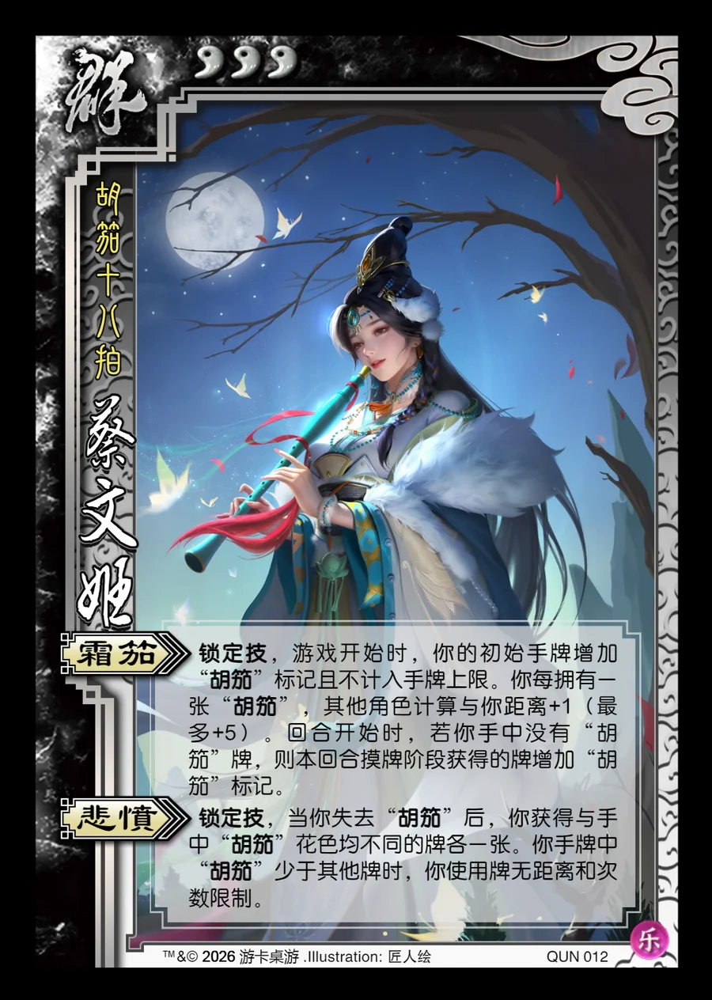

点击卡面查看大图
群
乐蔡文姬
♥3胡笳十八拍
霜笳锁定技
锁定技，游戏开始时，你的初始手牌增加“胡笳”标记且不计入手牌上限。你每拥有一张“胡笳”，其他角色计算与你距离+1（最多+5）。回合开始时，若你手中没有“胡笳”牌，则本回合摸牌阶段获得的牌增加“胡笳”标记。
悲愤锁定技
锁定技，当你失去“胡笳”后，你获得与手中“胡笳”花色均不同的牌各一张。你手牌中“胡笳”少于其他牌时，你使用牌无距离和次数限制。

点击卡面查看大图
胡笳十八拍
锁定技，游戏开始时，你的初始手牌增加“胡笳”标记且不计入手牌上限。你每拥有一张“胡笳”，其他角色计算与你距离+1（最多+5）。回合开始时，若你手中没有“胡笳”牌，则本回合摸牌阶段获得的牌增加“胡笳”标记。
锁定技，当你失去“胡笳”后，你获得与手中“胡笳”花色均不同的牌各一张。你手牌中“胡笳”少于其他牌时，你使用牌无距离和次数限制。